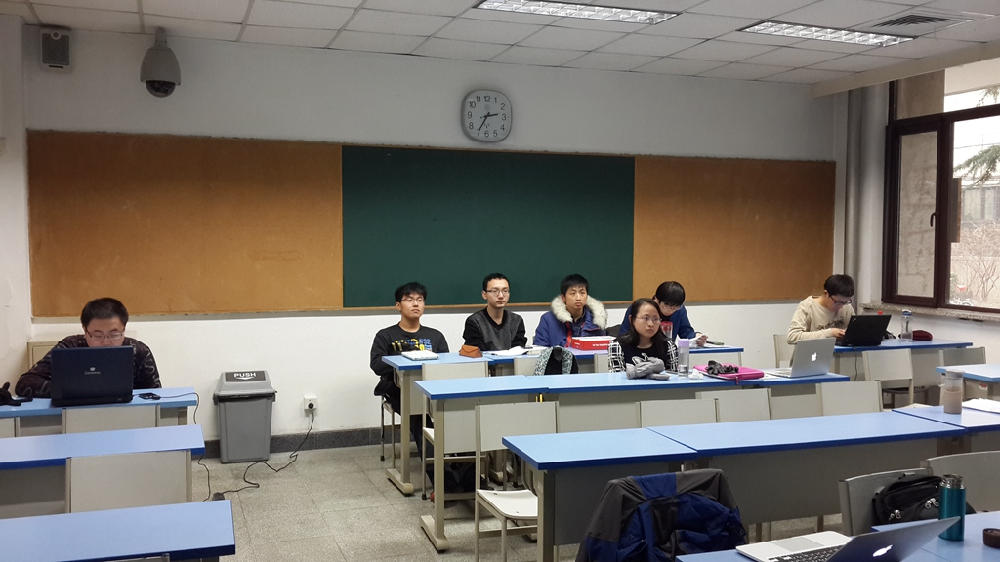
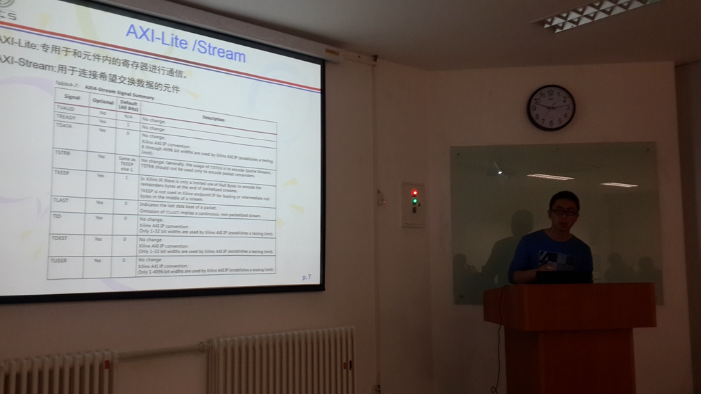
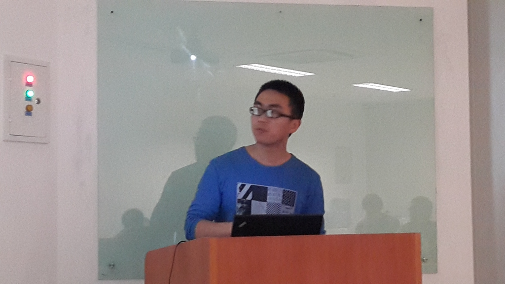
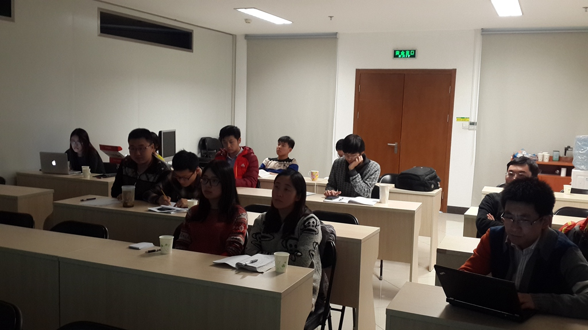
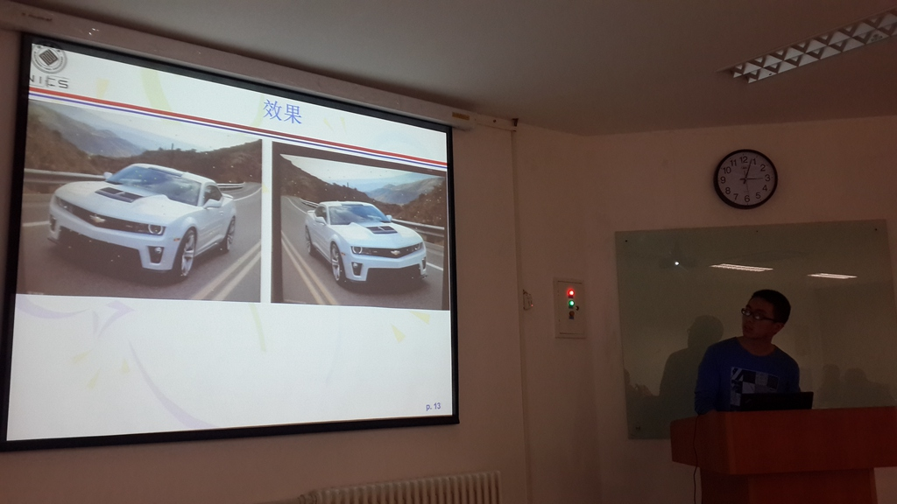
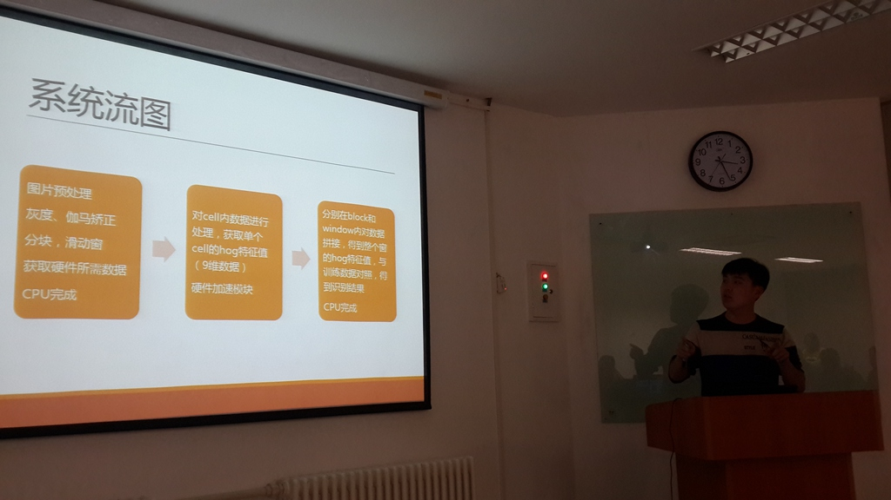
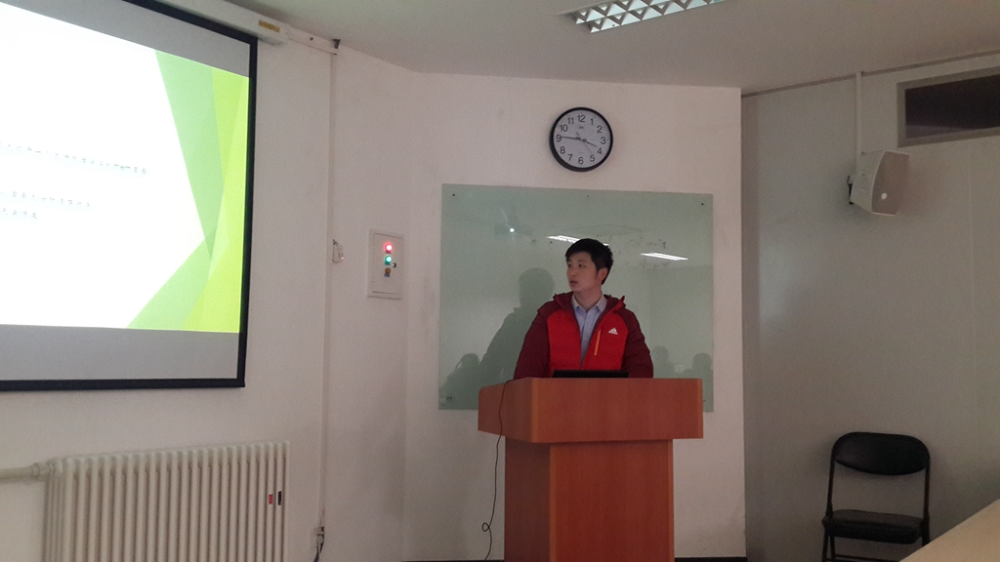
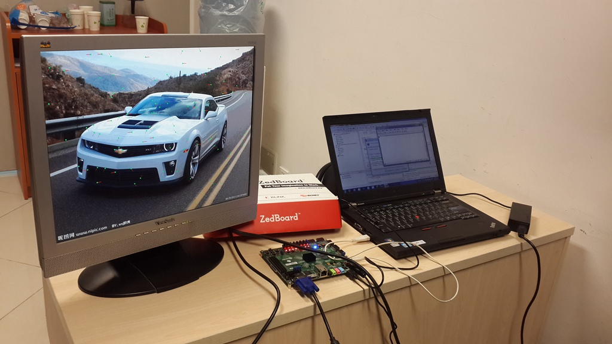

| [2014 Fall] | ||||
|
潤更晒鹿撹窮揃譜柴 Structural Integrated Circuit Design |
||||
| [Overview] - [People] - [Acknowledgements] | ||||
|
|
||||
| [Overview] | ||||
| //Schedule | ||||
|
Tuesday Afternoon, Week 1 ~ Week 16 (2014.09~2014.12) S1, 1:30pm~2:15pm S2, 2:20pm~3:05pm S3, 3:20pm~4:05pm |
||||
| //Place | ||||
| Room 3111, Teaching Building, 3rd. | ||||
| //TOC | ||||
| L1:// Overview of the Structural Integrated Circuit Design | ||||
| L2:// HDL Language Introduction | ||||
| L3:// Seminar: Xilinx Vivado HLS and ZedBoard | ||||
| L4:// System-Level Modeling, Evaluation and Hardware Architectures | ||||
| L5:// RTL-Level Modeling and Evaluation | ||||
| L6:// Cutting-Edge Issues in Advanced SOC Designs | ||||
| Week 8 ~ Week16:// Research Project | ||||
| The following course of "MOS Integrated Circuits Design and Practice" will cover the design flows from RTL level to real silicon. >> 2014 Spring | ||||
| //Homework | ||||
| 1. Funding Proposal Practice and Defense (2014.11.11) | ||||
| 2. RTL-Level Design Practice: Image Signal Processing HDL IP and Verification | ||||
| 3. System-Level Design Practice: Intel Cofluent Quick Demo | ||||
| 4. HLS Design Flow: From C/C++/SystemC to Image Signal Processing HDL IP and Comparision | ||||
| //Course Project | ||||
| The course projects are focusing on image/video signal processing SOC designs, especially for some feature extraction algorithms, such as optical flow, HOG, SURF and KLT feature trakers. Finally, the whole system would be implemented on the Zynq FPGA platform of Xilinx, which is composed of two on-chip ARM cores, AXI bus and programmable logics for application-specific accelerators | ||||
| Step 1. ISP IP design and verification. SOC architecture design. | ||||
| Step 2. Implementation and Optimization of SOC on FPGA platform. | ||||
| --Course Projects: | ||||
| 1. SURF Acc @ FPGA | ||||
| 2. HOG Acc @ FPGA | ||||
| --Defense, Live Demo and Discussion of Course Projects: | ||||
|  |  |  |  | |
|  |  |  |  | |
| //Open Source | ||||
| The course materials of SOC architectures and ISP Hardware IPs would be freely accessed for academic use only under the open-source license agreement. >> | ||||
| [People] | ||||
| Fei Qiao ( qiaofei@tsinghua.edu.cn ) @ Rohm Building 4302 | ||||
| TA: Xinghua Yang ( geniocean@126.com ), Yi Li ( elyi.lee@gmail.com ) and Liang Zhang @ Rohm Building 4107 | ||||
| Acknowledgements | ||||
| The design flows from system level to RTL level are partly supported by leading tools from Intel (Coflunet) and Xilinx (Vivado HLS and Zebboard). | ||||
| The course is partly supported by 2013 MOE-Intel Discipline Building Project : "Mobile Computing Courses Group for Hardware and Software Co-Design and Practice". | ||||
|
Copyright © 2014 Fei Qiao, Tsinghua University, Beijing, P.R.C. All rights reserved Last Update : 2015-01-31 |
||||